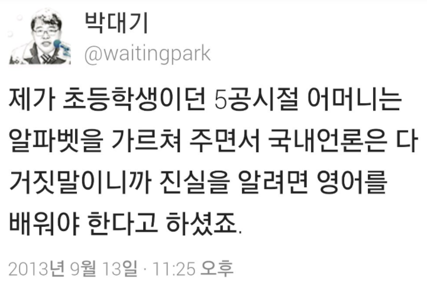

미국이 가상화폐 양성화에 나섰다고요 ? 전혀요.
게시: 2018-01-14T20:04:57+09:00
방금 서울경제신문에서 '가상화폐 양성화 나선 미·러···동남아는 고강도 억제 지속'이라는 자극적 제목의 기사를 올린 것을 봤습니다.
기사의 핵심은 아래 부분입니다.
‘가상화폐 종주국’인 미국도 다른 국가와의 협력을 통해 촘촘한 규제가 마련된다면 거래에 제한을 두지 않을 것임을 시사했다. 스티븐 므누신 미국 재무장관은 이날 미국 재계인사들의 모임인 ‘워싱턴 경제클럽’에서 “가상화폐가 ‘현대판 스위스 은행 계좌’가 되도록 허용하면 안 된다”며 이를 위해 주요20개국(G20)을 포함해 다른 국가들과 공조하겠다고 밝혔다. “가상화폐가 불법행위를 감추는 도구로 전락해서는 안 된다”는 발언으로 규제 수위를 시사하면서 양성화된 거래는 허용할 것임을 표명한 셈이다. 아울러 미국은 현행법상 은행이 가상화폐 지갑 소유자의 정보를 갖고 있어야 하며 이를 통해 거래활동의 추적이 가능한 만큼 다른 나라들도 이처럼 조치하도록 규제를 통한 양성화에 협력하겠다고 덧붙였다.
더 핵심적인 부분을 나열하면 아래와 같습니다.
'거래에 제한을 두지 않을 것임을 시사' '양성화된 거래는 허용할 것임을 표명'
이 문구만 보면 독자들은 미국이 암호화폐를 양성화하고 제도권 화폐로서 인정할 것이라고 오해할 수 밖에 없습니다.
그러나 위 문구들은 저 서울경제신문이 참조했을 외신들의 원문에는 전혀 나오지 않는 것들입니다. 즉, 서울경제신문에서 임의로 추가한 서울경제신문 기자의 사견에 불과합니다.
므누신 장관이 워싱턴 경제클럽에서 한 말의 핵심은 두가지입니다. 원문 그대로 옮기겠습니다.
https://www.cnbc.com/2018/01/12/mnuchin-wants-to-make-sure-bad-guys-cant-use-cryptocurrencies.html
https://www.ethnews.com/treasury-secretary-steve-mnuchin-talks-cryptocurrency
“We want to make sure that bad people cannot use these currencies to do bad things”
"우리는 나쁜 사람들이 이런 암호화폐를 나쁜 일에 사용할 수 없도록 보장하고 싶습니다."
“There’s a lot of speculation in this. I want to make sure that consumers who are trading this understand the risks, because I am concerned that consumers can get hurt.”
"여기에는 많은 투기가 일어나고 있습니다. 이걸 거래하고 있는 소비자들이 그 위험이 어떤 것인지 확실히 이해하도록 하고 싶습니다. 소비자들이 다칠까 염려되기 때문입니다."
어디에도 가상화폐를 정식 화폐로 인정하고 양성화한다는 말은 없습니다. 오히려 여기에 지나친 투기가 일어나고 있는데 일반인들이 잘 모르고 투자했다가 큰 손실을 입을까 걱정이라는 것이 주된 내용입니다. 기자가 암호화폐에 거금을 투자했는지는 안 했는지는 모르겠으나, 저 서울경제기사는 언어의 미묘함을 이용하여 대중을 오도하기에 딱 좋은 내용일 뿐입니다.
혹시 '미국에서 비트코인으로 거래를 하는 것이 불법이 아니지 않느냐'라고 물으신다면 그건 맞습니다. 비트코인이 불법으로 규정되지 않는 한 거래는 자유롭습니다. 그러나 그건 우리나라도 마찬가지입니다. 심지어 (잘은 모르겠으나) 중국에서도 그건 마찬가지일 것입니다. 중국에서 규제하는 것은 마이닝 팜에 규제를 가하거나 ICO를 못 하게 하는 것이지, 개인이 비트코인 같은 것을 사고 파는 것은 불법이 아닌 것으로 알고 있습니다. 그렇다고 '중국도 암호화폐 양성화에 나섰다'라고 기사를 쓰는 것은 잘못된 것이쟎습니까 ?
오히려, 외신 원문에서는 므누신 장관이 암호화폐에 대한 강력한 규제가 필요함을 역설하고 있습니다.
Under US law, Mnuchin explained, bitcoin wallet providers have the same KYC obligations as banks. The same is not true of the rest of the world. Many countries lack anti-money laundering and customer identification safeguards.
But, Mnuchin added, "One of the things we'll be working very closely with the G20 on is making sure that this doesn't become the Swiss numbered bank accounts."
므누신 장관의 설명에 따르면, 미국 법률에서는 비트코인 지갑 서비스 제공업체는 은행과 동일한 KYC (Know your Customer, 일종의 금융 실명제) 준수 의무를 가지고 있다. 그런 규제가 없는 다른 나라들도 많다. 많은 나라들에서는 돈세탁 방지법과 고객 신원확인 규제장치가 없다.
하지만, 므누신은 덧붙였다. "향후 G20 국가들과 계속 밀접하게 협업할 많은 일 중 하나가 암호화폐가 스위스 비밀은행처럼 되버리는 것을 막는 일입니다."
아마 '러시아가 암호화폐를 국가 차원에서 양성화한다는 것은 사실 아니냐'라고 물으실 분들이 있을 겁니다. 저는 그 내용은 모르겠습니다. 다만, 위 기사에 관련 내용이 나옵니다. 러시아는 우크라이나 침공 사태 때문에 국제적 경제 제재를 받고 있습니다. 미국은 러시아가 저 암호화폐를 통해 그런 경제 제재를 피해 암거래를 할 것에 대해 걱정하고 있는데, 므누신 장관은 '그럴 걱정은 없다고 본다'라고 답변했습니다.
With respect to international issues, Rubenstein asked if Mnuchin is troubled by reports that Russia wants to use cryptocurrency for sanction-busting.
"Not at all," the Treasury Secretary replied. "I don't think that's a concern."
국제 문제에 대해, 루벤스타인은 러시아가 제재 회피를 위해 암호화폐를 이용하기를 원한다는 보고에 대해 염려를 느끼냐고 물었다.
"전혀요." 재무성 장관이 대답했다. "그게 걱정거리라고는 생각하지 않습니다."
오히려 한발 더 나아가 므누신은 미국이 국가적 암호화폐를 만들 생각이 전혀 없다고 밝혔습니다.
He added that the Federal Reserve has looked into digital dollars, but "the Fed and we don't think there's any need for that at this point."
그는 연방준비은행이 디지털 달러에 대해 연구하고 있다고 덧붙이고, 하지만 "연방준비은행과 우리는 이 시점에서 그런 것이 전혀 필요없다고 생각합니다"라고 말앴다.
결론적으로, 이 외신을 국내 기사로 번역할 때의 올바른 제목은 '가상화폐 양성화 나선 미·러'가 아니라 다음과 같은 것이어야 합니다.
"미국 재무성 장관도 암호화폐 투기에 따른 소비자들의 손실 우려, 규제 필요를 천명"
점점 국내 언론 기사, 특히 경제신문 기사는 믿지 말아야 한다는 생각만 듭니다.

-----------------------------------------
어제 밤에 아래와 같은 댓글이 달렸습니다. 서울경제에 위 기사를 쓰신 분이라고 합니다. 참조하시기 바랍니다.
--------------------------
안녕하세요, 해당 기사를 쓴 기자입니다. Nasica님의 신랄한 비판은 잘 읽었으나 저도 이름을 달고 쓴 기사이니만큼 정당하지 못한 비판에 대해서는 해명하는 게 맞다 생각해 찾아왔습니다. 우선 양성화와 음성화는 합법영역에서 규제하냐 불법으로 보고 막냐의 차이라고 생각합니다. 아예 이러한 정의가 내릴 생각도 하지 않은 지난해 한국과 같은 회색지대도 존재하겠지요. 잘 아시겠지만 미국은 올들어 CME와 CBOE 등 주요 거래소에서 비트코인을 기초자산으로 한 선물 거래를 허용하고 있습니다. 이미 여기에 대한 첫 청산까지 완료된 상황이지요. 아울러 애리조나 등 일부 주에서는 비트코인으로 세금을 낼 수 있는 법안도 심의 중입니다. 그래서 미국은 ‘양성화를 했다’라고 표현했습니다. 국내 언론은 믿지 못하시니 외신을 첨부합니다. https://www.cnbc.com/2018/01/17/as-the-first-bitcoin-futures-expire-price-and-volume-concerns-arise.html https://www.coindesk.com/bitcoin-tax-payments-bill-advances-arizona 다만 이날 므누신 장관의 발행은 이러한 최근의 기조 속에서 가상화폐를 불법의 온상이 되도록 마구 풀어주지는 않는다는 아주 강력한 메시지를 던진 것입니다. 말씀하신대로 투기에 대한 우려도 던졌지요. 하지만 다른 국가와의 협력을 통해 촘촘한 규제가 마련된다면 거래를 막지 않는다는 저의 ‘(사견이라고 표현하신) 해석’은 미국의 상황 속에서 틀리지 않았다고 생각합니다. 예를 들어 이날 “if you have a wallet to own bitcoins, that company has the same obligation as a bank to know”라고 했지요. https://www.bloomberg.com/news/articles/2018-01-12/mnuchin-warns-against-bitcoin-becoming-next-swiss-bank-account Nasica님은 “이 문구만 보면 독자들은 미국이 암호화폐를 양성화하고 제도권 화폐로서 인정할 것이라고 오해할 수밖에 없습니다”라고 하셨습니다. 이건 '가상화폐'라는 단어가 가져오는 오해이지만 제 기사에 가상화폐를 제도권 '화폐’로 인정한다고 표현한 적이 없습니다. 미국이 가상화폐에 대해 사용하고 있는 스탠스는 ‘거래가 가능한 자산’입니다. 화폐와 자산은 분명히 기능과 성격이 다르고 여기에 대해 잘 아시리라고 생각합니다. 제 생각에 대해 확실히 하고자 믿지 못할 기사지만 며칠 뒤에 나온 저의 후속 기사 붙여드립니다. http://m.news.naver.com/read.nhn?oid=011&aid=0003198947&sid1=101&mode=LSD 제가 인용하지 않은 연준이 디지털달러(혹은 크립토 달러)에 대한 므누신 장관이 ‘가치가 없다’고 말한 의견도 기사에 인용해 주셨습니다. 이 부분은 므누신의 스탠스에 대해 알려주시기 위해 인용하신 부분이라고 봅니다만 확실하게는 해야할 것 같습니다. 한국은행이 정부 소속이 아닌 독립성을 지닌 기관인것처럼 연준은 한차원 더 나아가 민간기관의 성격까지 지니고 있습니다. Federal Reserve Board라는 명칭에서 이러한 특성이 잘 드러나 있습니다. 한마디로 재무부 소속인 므누신이 연준에 대해 이런 말을 하는 건 일종의 월권이라고 봅니다. 그런데 연준에서는 부의장, 연은 총재 등 권한을 가진 인사들이 이미 여러 차례 암호화달러를 발행하는 구상을 하고 있다고 밝힌 바 있습니다. 지난해 11월 CNBC 기사입니다 https://www.cnbc.com/2017/11/29/federal-reserve-starting-to-think-about-its-own-digital-currency-dudley-says.html ‘잘 모르신다’고 하신 중국이나 동남아를 미국과 비교해 고강도 억제(또는 금지)를 한다고 표현한 이유는 다음과 같습니다. 말씀하신대로 중국은 채굴장에 대해 규제를 하고 있습니다. 또 ICO는 ‘불법’입니다. 블룸버그의 기사입니다. https://www.bloomberg.com/news/articles/2018-01-03/china-is-said-to-curb-electricity-supply-for-some-bitcoin-miners 중국은 한발 더 나아가 거래를 할 수 있는 모든 수단을 동원해 차단하고 있습니다. 중국은 현지 거래소를 폐쇄했고 외국 거래소 접속도 차단했습니다. P2P 거래중계사이트도 폐쇄했습니다. 물물거래 형태로 개인간 거래를 하는 건은 찾아낼 수 없으니 막을 수 없지만 '시장'형태로 이뤄지는 건 다 금지해버린 겁니다. 한마디로 적어주신 '혹시 ‘미국에서 비트코인으로 거래를 하는 것이 불법이 아니지 않느냐’라고 물으신다면 그건 맞습니다. 비트코인이 불법으로 규정되지 않는 한 거래는 자유롭습니다. 그러나 그건 우리나라도 마찬가지입니다. 심지어 (잘은 모르겠으나) 중국에서도 그건 마찬가지일 것입니다.'라는 문단은 명백한 오류입니다. 참고하실만한 로이터통신과 중국 인민은행 기관지를 인용한 SCMP의 기사입니다. https://www.reuters.com/article/us-china-bitcoin/pboc-official-says-chinas-centralized-virtual-currency-trade-needs-to-end-source-idUSKBN1F50FZ?utm_campaign=trueAnthem:+Trending+Content&utm_content=5a5d999204d3010368f4789b&utm_medium=trueAnthem&utm_source=twitter http://www.scmp.com/business/banking-finance/article/2132009/china-stamp-out-cryptocurrency-trading-completely-ban Nasica님 역시도 자신의 필명을 걸고 글을 적는 분이고 뉴미디어를 통해 기사를 노출하십니다. 그래서 주류 언론에 있는 기자만큼이나 철저한 사실 확인을 하셔서 기사를 작성하시겠지요. 그런데 러시아나 중국의 규제상황, 미국 연방준비제도의 준비상황에 대해 ‘모른다’라고 하시며 므누신 장관의 멘트만 가지고 기사를 비판하시니 기사를 쓴 사람으로서는 좀 당황스럽습니다. 저의 문장이 오해를 불러일으켰다면 그건 저의 문장력의 문제일 수는 있고, 신문 지면에 담을 수 있는 글자수의 제약으로 이러한 배경들을 다 담지 못해 생기는 오해일 수도 있습니다. 하지만므누신 장관의 발언이 어떠한 맥락에서 나왔는지 설명해 드린다면 왜 이런 표현이 나왔는지 이해하실 것이라고 생각했습니다. 덧붙여 국제부 기자는 번역가가 아닙니다. 세계에서 벌어지는 여러가지 일을 종합하고 판단해 나름의 ‘해설’을 하는 것입니다. 원문에 나오지 않는 문장을 적었다고 사견이며 가짜뉴스라고 하신다면 받아들이기 힘든 비판입니다. 제가 일일이 제가 참고로 했던 기사들을 링크로 달아드린 이유입니다. 이러한 해설이 사실을 이해하는 데 방해가 되는 사족이라고 느껴지신다면 어쩔 수 없습니다만... 그럼 앞으로도 정당한 비판은 달게 받고 토론도 환영합니다. 언론이 이런 불신의 대상이 된 데 대한 반성도 함께 전합니다. 관심 가져주셔서 감사합니다.